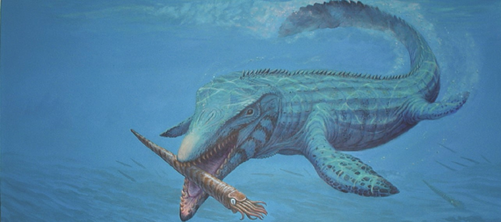
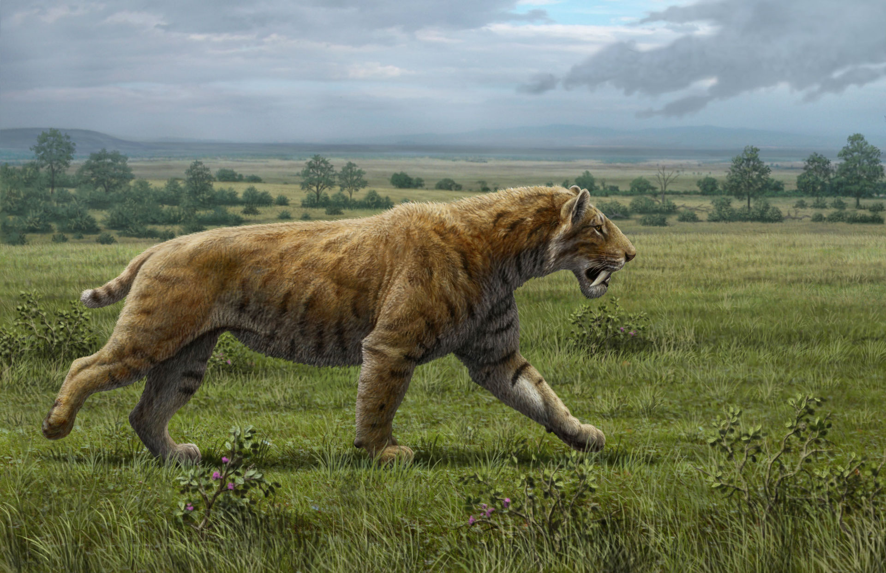

Prehistoric Archives
Welcome to Prehsitoric Archives, a website for educational purposes about Earth's past!
Earth has existed for 4.5 billion years, and thoughout that time, life has changed for millions of years, some species more succesful than others, leading to evolution and extinction.
From mighty giants like Argentinosaurus, looking into the bizarre looking such as the scissor-mouthed shark Edestus, or the creepy Eurypterids.
Listen to some music while you browse through.
Watch some documentaries about dinosaurs right here.
Geological Periods
Planet Earth is 4.5 billion years old, and a way to represent this deep time is with the Geologic Time Scale. which organizes Earth's history depending on any fundamental changes in stratigraphy.
The geologic time scale is like a giant calendar for Earth's history, stretching back billions of years. It can seem complex, but here's a simplified breakdown:
- Eons - These are the biggest slices of time, scaling to thousands of millions of years. There are four main eons: Hadean, Archean, Proterozoic, and Phanerozoic (we're currently in the Phanerozoic Eon).
- Eras - Think of these as subdivions within the eons, which span for hundreds of millions of years. For example, the Paleozoic Era is known for the rise of marine life.
- Periods - These are smaller segments within the eras, and typically last for tens of millions of years. The Jurassic Period, for instance, is famous for its dinosaurs.
- Epochs - The second smallest segment, found within periods and tending to be between 13 to 35 million years in length. Epoch names are often "Upper", "Middle", or "Lower". For example, the Cenozoic Era contains seven epochs
- Ages- The smallest segment in the chronological order, these segments are usually only a few million years in length. Ages typically end with the suffix "-an"/"-ian".

Creature Compedium
Paleozoic Species
- Anomalocaris
- Dunkleosteus
- Tiktaalik
- Dimetrodon
- Edestus
Mesozoic Species
- Tyrannosaurus
- Triceratops
- Tylosaurus
- Fasolasuchus
- Tropeognathus

Cenozoic Species
- Brontothere
- Smilodon
- Daeodon
- Otodus Megalodon
- Purrusaurus
